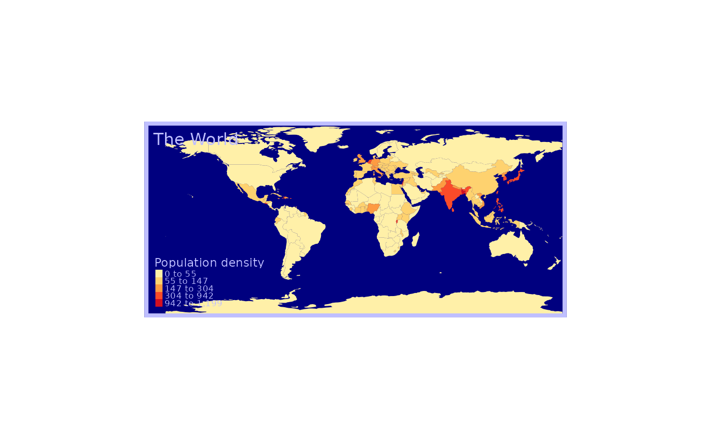
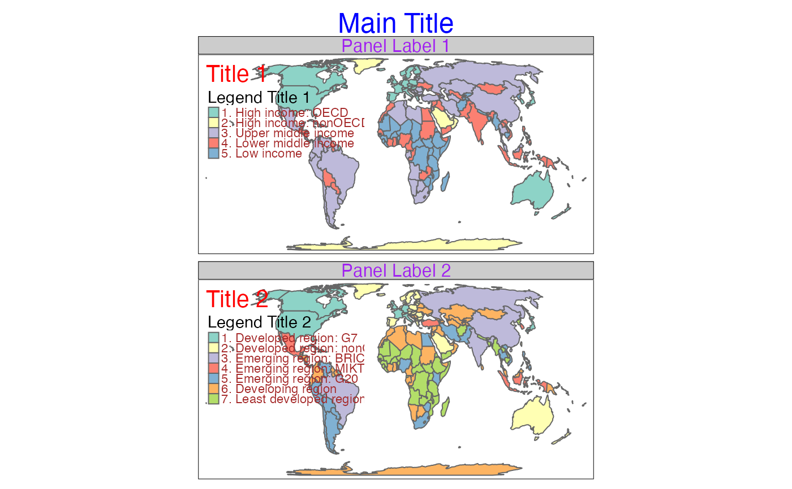
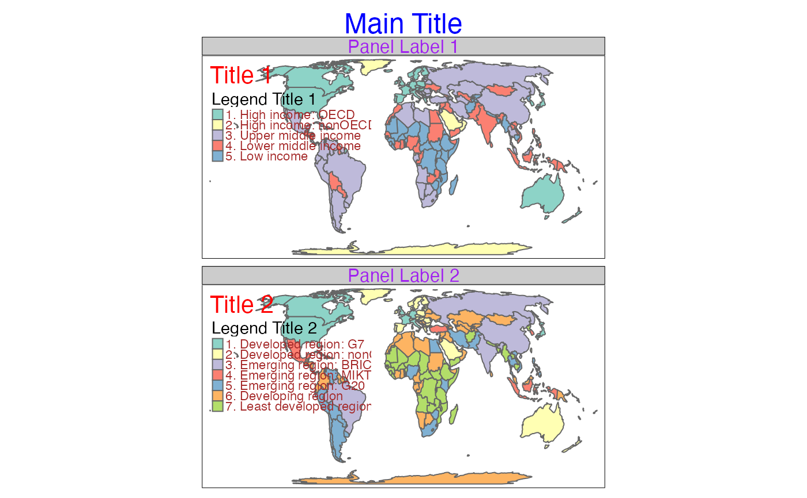

Specify the layout of the maps. tm_layout() is identical as tm_options() but only contain the tmap options that are directly related to the layout. tm_style() sets the style for the map. A style is a specified set of options (that can be changed afterwards with tm_layout()). These functions are used within a plot a plot call (stacked with the + operator). Their counterparts tmap_options() and tmap_style() can be used to set the (layout) options globally.
Usage
tm_style(style, ...)
tm_layout(
scale,
asp,
bg,
bg.color,
outer.bg,
outer.bg.color,
frame,
frame.color,
frame.alpha,
frame.lwd,
frame.r,
frame.double_line,
outer.margins,
inner.margins,
inner.margins.extra,
meta.margins,
meta.auto_margins,
between_margin,
panel.margin,
grid.mark.height,
xylab.height,
coords.height,
xlab.show,
xlab.text,
xlab.size,
xlab.color,
xlab.rotation,
xlab.space,
xlab.fontface,
xlab.fontfamily,
xlab.alpha,
xlab.side,
ylab.show,
ylab.text,
ylab.size,
ylab.color,
ylab.rotation,
ylab.space,
ylab.fontface,
ylab.fontfamily,
ylab.alpha,
ylab.side,
panel.type,
panel.wrap.pos,
panel.xtab.pos,
unit,
color.sepia_intensity,
color.saturation,
color_vision_deficiency_sim,
text.fontface,
text.fontfamily,
text.alpha,
component.position,
component.offset,
component.stack_margin,
component.autoscale,
component.resize_as_group,
component.frame_combine,
component.stack,
legend.stack,
chart.stack,
component.equalize,
component.frame,
component.frame.color,
component.frame.alpha,
component.frame.lwd,
component.frame.r,
component.bg,
component.bg.color,
component.bg.alpha,
legend.show,
legend.design,
legend.orientation,
legend.position,
legend.width,
legend.height,
legend.reverse,
legend.na.show,
legend.title.color,
legend.title.size,
legend.title.fontface,
legend.title.fontfamily,
legend.title.alpha,
legend.xlab.color,
legend.xlab.size,
legend.xlab.fontface,
legend.xlab.fontfamily,
legend.xlab.alpha,
legend.ylab.color,
legend.ylab.size,
legend.ylab.fontface,
legend.ylab.fontfamily,
legend.ylab.alpha,
legend.text.color,
legend.text.size,
legend.text.fontface,
legend.text.fontfamily,
legend.text.alpha,
legend.frame,
legend.frame.color,
legend.frame.alpha,
legend.frame.lwd,
legend.frame.r,
legend.bg,
legend.bg.color,
legend.bg.alpha,
legend.only,
legend.absolute_fontsize,
legend.settings.standard.portrait,
legend.settings.standard.landscape,
add_legend.position,
chart.show,
chart.plot.axis.x,
chart.plot.axis.y,
chart.position,
chart.width,
chart.height,
chart.reverse,
chart.na.show,
chart.title.color,
chart.title.size,
chart.title.fontface,
chart.title.fontfamily,
chart.title.alpha,
chart.xlab.color,
chart.xlab.size,
chart.xlab.fontface,
chart.xlab.fontfamily,
chart.xlab.alpha,
chart.ylab.color,
chart.ylab.size,
chart.ylab.fontface,
chart.ylab.fontfamily,
chart.ylab.alpha,
chart.text.color,
chart.text.size,
chart.text.fontface,
chart.text.fontfamily,
chart.text.alpha,
chart.frame,
chart.frame.color,
chart.frame.alpha,
chart.frame.lwd,
chart.frame.r,
chart.bg,
chart.bg.color,
chart.bg.alpha,
chart.object.color,
title.size,
title.color,
title.fontface,
title.fontfamily,
title.alpha,
title.padding,
title.frame,
title.frame.color,
title.frame.alpha,
title.frame.lwd,
title.frame.r,
title.position,
title.width,
credits.size,
credits.color,
credits.fontface,
credits.fontfamily,
credits.alpha,
credits.padding,
credits.position,
credits.width,
credits.height,
compass.north,
compass.type,
compass.text.size,
compass.size,
compass.show.labels,
compass.cardinal.directions,
compass.text.color,
compass.color.dark,
compass.color.light,
compass.lwd,
compass.margins,
compass.position,
inset.position,
logo.height,
logo.margins,
logo.between_margin,
logo.position,
inset_map.height,
inset_map.width,
inset_map.margins,
inset_map.between_margin,
inset_map.position,
inset_map.frame,
inset.height,
inset.width,
inset.margins,
inset.between_margin,
inset.frame,
inset.bg,
inset.bg.color,
inset.bg.alpha,
inset_grob.height,
inset_grob.width,
inset_gg.height,
inset_gg.width,
scalebar.breaks,
scalebar.width,
scalebar.text.size,
scalebar.text.color,
scalebar.text.fontface,
scalebar.text.fontfamily,
scalebar.color.dark,
scalebar.color.light,
scalebar.lwd,
scalebar.size,
scalebar.margins,
scalebar.position,
grid.show,
grid.labels.pos,
grid.x,
grid.y,
grid.n.x,
grid.n.y,
grid.crs,
grid.col,
grid.lwd,
grid.alpha,
grid.labels.show,
grid.labels.size,
grid.labels.col,
grid.labels.fontface,
grid.labels.fontfamily,
grid.labels.rot,
grid.labels.format,
grid.labels.cardinal,
grid.labels.margin.x,
grid.labels.margin.y,
grid.labels.space.x,
grid.labels.space.y,
grid.labels.inside_frame,
grid.ticks,
grid.lines,
grid.ndiscr,
mouse_coordinates.position,
minimap.server,
minimap.toggle,
minimap.position,
panel.show,
panel.labels,
panel.label.size,
panel.label.color,
panel.label.fontface,
panel.label.fontfamily,
panel.label.alpha,
panel.label.bg,
panel.label.bg.color,
panel.label.bg.alpha,
panel.label.frame,
panel.label.frame.color,
panel.label.frame.alpha,
panel.label.frame.lwd,
panel.label.frame.r,
panel.label.height,
panel.label.rot,
qtm.scalebar,
qtm.minimap,
qtm.mouse_coordinates,
earth_boundary,
earth_boundary.color,
earth_boundary.lwd,
earth_datum,
space.color,
check_and_fix,
basemap.show,
basemap.server,
basemap.alpha,
basemap.zoom,
tiles.show,
tiles.server,
tiles.alpha,
tiles.zoom,
attr.color,
crs_extra,
crs_global,
crs_basemap,
title = NULL,
...
)Arguments
- style
name of the style
- ...
List of tmap options to be set, or option names (characters) to be returned (see details)
- scale
Overall scale of the map
- asp
Aspect ratio of each map. When
aspis set toNA(default) the aspect ratio will be adjusted to the used shapes. When set to 0 the aspect ratio is adjusted to the size of the device divided by the number of columns and rows.- bg
Draw map background?
- bg.color
Background color of the map.
- outer.bg
Draw map background (outside the frame)?
- outer.bg.color
Background color of map outside the frame.
- frame
Draw map frame?
- frame.color
The color of the frame.
- frame.alpha
The alpha transparency of the frame.
- frame.lwd
The line width of the frame. See
graphics::par, option 'lwd'.- frame.r
The r (radius) of the frame.
- frame.double_line
The double line of the frame.
TRUEorFALSE.- outer.margins
The margins of the outer space (outside the frame. A vector of 4 values: bottom, left, top, right. The unit is the device height (for bottom and top) or width (for left and right).
- inner.margins
The margins of the inner space (inside the frame). A vector of 4 values: bottom, left, top, right. The unit is the device height (for bottom and top) or width (for left and right).
- inner.margins.extra
The extra arguments of the margins of the inner space (inside the frame). A list of arguments.
- meta.margins
The margins of the meta. A vector of 4 values: bottom, left, top, right. The unit is the device height (for bottom and top) or width (for left and right).
- meta.auto_margins
The auto_margins of the meta.
- between_margin
Margin between the map.
- panel.margin
The margin of the panel.
- grid.mark.height
The height of the mark of the grid.
- xylab.height
The height of the xylab.
- coords.height
The height of the coords.
- xlab.show
The visibility of the xlab.
TRUEorFALSE.- xlab.text
The text of the xlab.
- xlab.size
The size of the xlab.
- xlab.color
The color of the xlab.
- xlab.rotation
The rotation of the xlab.
- xlab.space
The space of the xlab. In terms of number of text line heights.
- xlab.fontface
The font face of the xlab. See
graphics::par, option 'font'.- xlab.fontfamily
The font family of the xlab. See
graphics::par, option 'family'.- xlab.alpha
The alpha transparency of the xlab.
- xlab.side
The side of the xlab.
- ylab.show
The visibility of the ylab.
TRUEorFALSE.- ylab.text
The text of the ylab.
- ylab.size
The size of the ylab.
- ylab.color
The color of the ylab.
- ylab.rotation
The rotation of the ylab.
- ylab.space
The space of the ylab. In terms of number of text line heights.
- ylab.fontface
The font face of the ylab. See
graphics::par, option 'font'.- ylab.fontfamily
The font family of the ylab. See
graphics::par, option 'family'.- ylab.alpha
The alpha transparency of the ylab.
- ylab.side
The side of the ylab.
- panel.type
The type of the panel.
- panel.wrap.pos
The panel positions for wrapped facets created with
tm_facets_grid(). One of"left","right","top"(default) or"bottom".- panel.xtab.pos
The panel positions for grid facets created with
tm_facets_grid(). Vector of two, where the first determines the locations of row panels ("left"or"right") and the second the location of column panels ("top"or `"bottom")- unit
Unit of the coordinate
- color.sepia_intensity
The sepia_intensity of the color.
- color.saturation
The saturation of the color.
- color_vision_deficiency_sim
`Color vision deficiency simulation
- text.fontface
The font face of the text. See
graphics::par, option 'font'.- text.fontfamily
The font family of the text. See
graphics::par, option 'family'.- text.alpha
The alpha transparency of the text.
- component.position
The position of the component. A tm_pos object, or a shortcut of two values: horizontal (left, center, right) and vertical (top, center, bottom). See tm_pos for details
- component.offset
The offset of the component.
- component.stack_margin
The stack_margin of the component.
- component.autoscale
The autoscale of the component.
- component.resize_as_group
The resize_as_group of the component.
- component.frame_combine
The frame_combine of the component.
- component.stack
The stack of the component.
- legend.stack
The stack of the legend.
- chart.stack
The stack of the chart.
- component.equalize
The equalize of the component.
- component.frame
The frame of the component.
- component.frame.color
The color of the frame of the component.
- component.frame.alpha
The alpha transparency of the frame of the component.
- component.frame.lwd
The line width of the frame of the component. See
graphics::par, option 'lwd'.- component.frame.r
The r (radius) of the frame of the component.
- component.bg
The bg of the component.
- component.bg.color
The color of the bg of the component.
- component.bg.alpha
The alpha transparency of the bg of the component.
- legend.show
The visibility of the legend.
TRUEorFALSE.- legend.design
The design of the legend.
- legend.orientation
The orientation of the legend.
- legend.position
The position of the legend. A tm_pos object, or a shortcut of two values: horizontal (left, center, right) and vertical (top, center, bottom). See tm_pos for details
- legend.width
The width of the legend.
- legend.height
The height of the legend.
- legend.reverse
The reverse of the legend.
- legend.na.show
The visibility of the na of the legend.
TRUEorFALSE.- legend.title.color
The color of the title of the legend.
- legend.title.size
The size of the title of the legend.
- legend.title.fontface
The font face of the title of the legend. See
graphics::par, option 'font'.- legend.title.fontfamily
The font family of the title of the legend. See
graphics::par, option 'family'.- legend.title.alpha
The alpha transparency of the title of the legend.
- legend.xlab.color
The color of the xlab of the legend.
- legend.xlab.size
The size of the xlab of the legend.
- legend.xlab.fontface
The font face of the xlab of the legend. See
graphics::par, option 'font'.- legend.xlab.fontfamily
The font family of the xlab of the legend. See
graphics::par, option 'family'.- legend.xlab.alpha
The alpha transparency of the xlab of the legend.
- legend.ylab.color
The color of the ylab of the legend.
- legend.ylab.size
The size of the ylab of the legend.
- legend.ylab.fontface
The font face of the ylab of the legend. See
graphics::par, option 'font'.- legend.ylab.fontfamily
The font family of the ylab of the legend. See
graphics::par, option 'family'.- legend.ylab.alpha
The alpha transparency of the ylab of the legend.
- legend.text.color
The color of the text of the legend.
- legend.text.size
The size of the text of the legend.
- legend.text.fontface
The font face of the text of the legend. See
graphics::par, option 'font'.- legend.text.fontfamily
The font family of the text of the legend. See
graphics::par, option 'family'.- legend.text.alpha
The alpha transparency of the text of the legend.
- legend.frame
The frame of the legend.
- legend.frame.color
The color of the frame of the legend.
- legend.frame.alpha
The alpha transparency of the frame of the legend.
- legend.frame.lwd
The line width of the frame of the legend. See
graphics::par, option 'lwd'.- legend.frame.r
The r (radius) of the frame of the legend.
- legend.bg
The bg of the legend.
- legend.bg.color
The color of the bg of the legend.
- legend.bg.alpha
The alpha transparency of the bg of the legend.
- legend.only
The only of the legend.
- legend.absolute_fontsize
The absolute fontsize of the legend. So far, only used to calculate legend dimensions
- legend.settings.standard.portrait
The portrait of the standard of the settings of the legend.
- legend.settings.standard.landscape
The landscape of the standard of the settings of the legend.
- add_legend.position
The position of the add_legend. A tm_pos object, or a shortcut of two values: horizontal (left, center, right) and vertical (top, center, bottom). See tm_pos for details
- chart.show
The visibility of the chart.
TRUEorFALSE.- chart.plot.axis.x
The x of the axis of the plot of the chart.
- chart.plot.axis.y
The y of the axis of the plot of the chart.
- chart.position
The position of the chart. A tm_pos object, or a shortcut of two values: horizontal (left, center, right) and vertical (top, center, bottom). See tm_pos for details
- chart.width
The width of the chart.
- chart.height
The height of the chart.
- chart.reverse
The reverse of the chart.
- chart.na.show
The visibility of the na of the chart.
TRUEorFALSE.- chart.title.color
The color of the title of the chart.
- chart.title.size
The size of the title of the chart.
- chart.title.fontface
The font face of the title of the chart. See
graphics::par, option 'font'.- chart.title.fontfamily
The font family of the title of the chart. See
graphics::par, option 'family'.- chart.title.alpha
The alpha transparency of the title of the chart.
- chart.xlab.color
The color of the xlab of the chart.
- chart.xlab.size
The size of the xlab of the chart.
- chart.xlab.fontface
The font face of the xlab of the chart. See
graphics::par, option 'font'.- chart.xlab.fontfamily
The font family of the xlab of the chart. See
graphics::par, option 'family'.- chart.xlab.alpha
The alpha transparency of the xlab of the chart.
- chart.ylab.color
The color of the ylab of the chart.
- chart.ylab.size
The size of the ylab of the chart.
- chart.ylab.fontface
The font face of the ylab of the chart. See
graphics::par, option 'font'.- chart.ylab.fontfamily
The font family of the ylab of the chart. See
graphics::par, option 'family'.- chart.ylab.alpha
The alpha transparency of the ylab of the chart.
- chart.text.color
The color of the text of the chart.
- chart.text.size
The size of the text of the chart.
- chart.text.fontface
The font face of the text of the chart. See
graphics::par, option 'font'.- chart.text.fontfamily
The font family of the text of the chart. See
graphics::par, option 'family'.- chart.text.alpha
The alpha transparency of the text of the chart.
- chart.frame
The frame of the chart.
- chart.frame.color
The color of the frame of the chart.
- chart.frame.alpha
The alpha transparency of the frame of the chart.
- chart.frame.lwd
The line width of the frame of the chart. See
graphics::par, option 'lwd'.- chart.frame.r
The r (radius) of the frame of the chart.
- chart.bg
The bg of the chart.
- chart.bg.color
The color of the bg of the chart.
- chart.bg.alpha
The alpha transparency of the bg of the chart.
- chart.object.color
The color of the object of the chart.
- title.size
The size of the title.
- title.color
The color of the title.
- title.fontface
The font face of the title. See
graphics::par, option 'font'.- title.fontfamily
The font family of the title. See
graphics::par, option 'family'.- title.alpha
The alpha transparency of the title.
- title.padding
The padding of the title. A vector of 4 values: bottom, left, top, right. The unit is the device height (for bottom and top) or width (for left and right).
- title.frame
The frame of the title.
- title.frame.color
The color of the frame of the title.
- title.frame.alpha
The alpha transparency of the frame of the title.
- title.frame.lwd
The line width of the frame of the title. See
graphics::par, option 'lwd'.- title.frame.r
The r (radius) of the frame of the title.
- title.position
The position of the title. A tm_pos object, or a shortcut of two values: horizontal (left, center, right) and vertical (top, center, bottom). See tm_pos for details
- title.width
The width of the title.
- credits.size
The size of the credits.
- credits.color
The color of the credits.
- credits.fontface
The font face of the credits. See
graphics::par, option 'font'.- credits.fontfamily
The font family of the credits. See
graphics::par, option 'family'.- credits.alpha
The alpha transparency of the credits.
- credits.padding
The padding of the credits. A vector of 4 values: bottom, left, top, right. The unit is the device height (for bottom and top) or width (for left and right).
- credits.position
The position of the credits. A tm_pos object, or a shortcut of two values: horizontal (left, center, right) and vertical (top, center, bottom). See tm_pos for details
- credits.width
The width of the credits.
- credits.height
The height of the credits.
- compass.north
The north of the compass.
- compass.type
The type of the compass.
- compass.text.size
The size of the text of the compass.
- compass.size
The size of the compass.
- compass.show.labels
The labels of the show of the compass.
- compass.cardinal.directions
The directions of the cardinal of the compass.
- compass.text.color
The color of the text of the compass.
- compass.color.dark
The dark of the color of the compass.
- compass.color.light
The light of the color of the compass.
- compass.lwd
The line width of the compass. See
graphics::par, option 'lwd'.- compass.margins
The margins of the compass. A vector of 4 values: bottom, left, top, right. The unit is the device height (for bottom and top) or width (for left and right).
- compass.position
The position of the compass. A tm_pos object, or a shortcut of two values: horizontal (left, center, right) and vertical (top, center, bottom). See tm_pos for details
- inset.position
The position of the inset. A tm_pos object, or a shortcut of two values: horizontal (left, center, right) and vertical (top, center, bottom). See tm_pos for details
- logo.height
The height of the logo.
- logo.margins
The margins of the logo. A vector of 4 values: bottom, left, top, right. The unit is the device height (for bottom and top) or width (for left and right).
- logo.between_margin
The between_margin of the logo.
- logo.position
The position of the logo. A tm_pos object, or a shortcut of two values: horizontal (left, center, right) and vertical (top, center, bottom). See tm_pos for details
- inset_map.height
The height of the inset_map.
- inset_map.width
The width of the inset_map.
- inset_map.margins
The margins of the inset_map. A vector of 4 values: bottom, left, top, right. The unit is the device height (for bottom and top) or width (for left and right).
- inset_map.between_margin
The between_margin of the inset_map.
- inset_map.position
The position of the inset_map. A tm_pos object, or a shortcut of two values: horizontal (left, center, right) and vertical (top, center, bottom). See tm_pos for details
- inset_map.frame
The frame of the inset_map.
- inset.height
The height of the inset.
- inset.width
The width of the inset.
- inset.margins
The margins of the inset. A vector of 4 values: bottom, left, top, right. The unit is the device height (for bottom and top) or width (for left and right).
- inset.between_margin
The between_margin of the inset.
- inset.frame
The frame of the inset.
- inset.bg
The bg of the inset.
- inset.bg.color
The color of the bg of the inset.
- inset.bg.alpha
The alpha transparency of the bg of the inset.
- inset_grob.height
The height of the inset_grob.
- inset_grob.width
The width of the inset_grob.
- inset_gg.height
The height of the inset_gg.
- inset_gg.width
The width of the inset_gg.
- scalebar.breaks
The break values of the scalebar.
- scalebar.width
The width of the scalebar.
- scalebar.text.size
The size of the text of the scalebar.
- scalebar.text.color
The color of the text of the scalebar.
- scalebar.text.fontface
The font face of the text of the scalebar. See
graphics::par, option 'font'.- scalebar.text.fontfamily
The font family of the text of the scalebar. See
graphics::par, option 'family'.- scalebar.color.dark
The dark of the color of the scalebar.
- scalebar.color.light
The light of the color of the scalebar.
- scalebar.lwd
The line width of the scalebar. See
graphics::par, option 'lwd'.- scalebar.size
The size of the scalebar.
- scalebar.margins
The margins of the scalebar. A vector of 4 values: bottom, left, top, right. The unit is the device height (for bottom and top) or width (for left and right).
- scalebar.position
The position of the scalebar. A tm_pos object, or a shortcut of two values: horizontal (left, center, right) and vertical (top, center, bottom). See tm_pos for details
- grid.show
The visibility of the grid.
TRUEorFALSE.- grid.labels.pos
The pos of the labels of the grid.
- grid.x
The x of the grid.
- grid.y
The y of the grid.
- grid.n.x
The x of the n of the grid.
- grid.n.y
The y of the n of the grid.
- grid.crs
The coordinate reference system (CRS) of the grid.
- grid.col
The color of the grid.
- grid.lwd
The line width of the grid. See
graphics::par, option 'lwd'.- grid.alpha
The alpha transparency of the grid.
- grid.labels.show
The visibility of the labels of the grid.
TRUEorFALSE.- grid.labels.size
The size of the labels of the grid.
- grid.labels.col
The color of the labels of the grid.
- grid.labels.fontface
The font face of the labels of the grid. See
graphics::par, option 'font'.- grid.labels.fontfamily
The font family of the labels of the grid. See
graphics::par, option 'family'.- grid.labels.rot
The rot of the labels of the grid.
- grid.labels.format
The format of the labels of the grid.
- grid.labels.cardinal
The cardinal of the labels of the grid.
- grid.labels.margin.x
The x of the margin of the labels of the grid.
- grid.labels.margin.y
The y of the margin of the labels of the grid.
- grid.labels.space.x
The x of the space of the labels of the grid.
- grid.labels.space.y
The y of the space of the labels of the grid.
- grid.labels.inside_frame
The inside_frame of the labels of the grid.
- grid.ticks
The ticks of the grid.
- grid.lines
The lines of the grid.
- grid.ndiscr
The ndiscr of the grid.
- mouse_coordinates.position
The position of the mouse_coordinates. A tm_pos object, or a shortcut of two values: horizontal (left, center, right) and vertical (top, center, bottom). See tm_pos for details
- minimap.server
The server of the minimap.
- minimap.toggle
The toggle of the minimap.
- minimap.position
The position of the minimap. A tm_pos object, or a shortcut of two values: horizontal (left, center, right) and vertical (top, center, bottom). See tm_pos for details
- panel.show
The visibility of the panel.
TRUEorFALSE.- panel.labels
The labels of the panel.
- panel.label.size
The size of the label of the panel.
- panel.label.color
The color of the label of the panel.
- panel.label.fontface
The font face of the label of the panel. See
graphics::par, option 'font'.- panel.label.fontfamily
The font family of the label of the panel. See
graphics::par, option 'family'.- panel.label.alpha
The alpha transparency of the label of the panel.
- panel.label.bg
The bg of the label of the panel.
- panel.label.bg.color
The color of the bg of the label of the panel.
- panel.label.bg.alpha
The alpha transparency of the bg of the label of the panel.
- panel.label.frame
The frame of the label of the panel.
- panel.label.frame.color
The color of the frame of the label of the panel.
- panel.label.frame.alpha
The alpha transparency of the frame of the label of the panel.
- panel.label.frame.lwd
The line width of the frame of the label of the panel. See
graphics::par, option 'lwd'.- panel.label.frame.r
The r (radius) of the frame of the label of the panel.
- panel.label.height
The height of the label of the panel.
- panel.label.rot
Rotation angles of the panel labels. Vector of four values that determine the panel label rotation when they are placed left, top, right, and bottom. The default angles are 90, 0, 270 and 0 respectively. Note that the second value is the most common, since labels are by default shown on top (see
panel.wrap.pos). In cross-table facets created withtm_facets_grid(), the first two values are used by default (seepanel.xtab.pos).- qtm.scalebar
The scalebar of the qtm.
- qtm.minimap
The minimap of the qtm.
- qtm.mouse_coordinates
The mouse_coordinates of the qtm.
- earth_boundary
The earth boundary
- earth_boundary.color
The color of the earth_boundary.
- earth_boundary.lwd
The line width of the earth_boundary. See
graphics::par, option 'lwd'.- earth_datum
Earth datum
- space.color
The color of the space.
- check_and_fix
Should attempt to fix an invalid shapefile
- basemap.show
The visibility of the basemap.
TRUEorFALSE.- basemap.server
The server of the basemap.
- basemap.alpha
The alpha transparency of the basemap.
- basemap.zoom
The zoom of the basemap.
- tiles.show
The visibility of the tiles.
TRUEorFALSE.- tiles.server
The server of the tiles.
- tiles.alpha
The alpha transparency of the tiles.
- tiles.zoom
The zoom of the tiles.
- attr.color
The color of the attr.
- crs_extra
Only used internally (work in progress)
- crs_global
The used crs for world maps
- crs_basemap
The crs_basemap of the .
- title
deprecated See
tm_title()
Examples
tm_shape(World) +
tm_polygons() +
tm_layout(
bg.color = "steelblue",
outer.bg.color = "gold",
frame.lwd = 3,
inner.margins = 0)

tm_shape(World) +
tm_polygons(fill = "HPI") +
tm_style("classic")
 tm_shape(World) +
tm_polygons(fill = "HPI") +
tm_style("cobalt")

tm_shape(World) +
tm_polygons(fill = "HPI") +
tm_style("cobalt")
